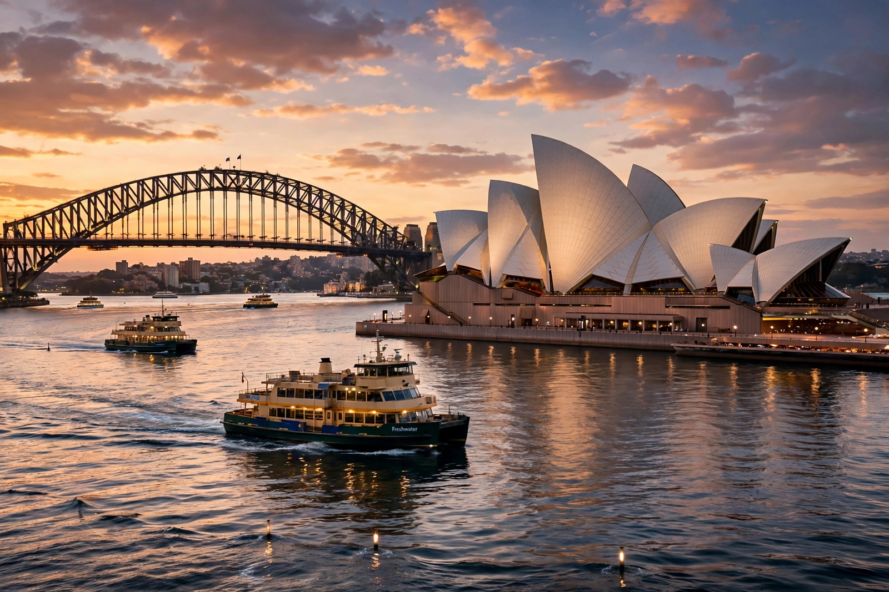

Australia
From Wikipedia, the free encyclopedia

Australia, officially the Commonwealth of Australia, is a country comprising the mainland of the Australian continent, Tasmania and numerous smaller islands — the world's sixth-largest country. Its capital is Canberra and its largest city is Sydney. Indigenous Australians have lived there for at least 65,000 years. Australia is known for unique marsupial fauna such as kangaroos, koalas and {W('Wombat','wombats') if False else 'wombats'}, and for landscapes from desert Outback to the Great Barrier Reef.
History and society
European colonisation began with a British penal settlement at Sydney in 1788; the colonies federated in 1901. Australia is a constitutional monarchy and parliamentary democracy of about 26 million people, a major exporter of minerals, energy and agricultural goods.